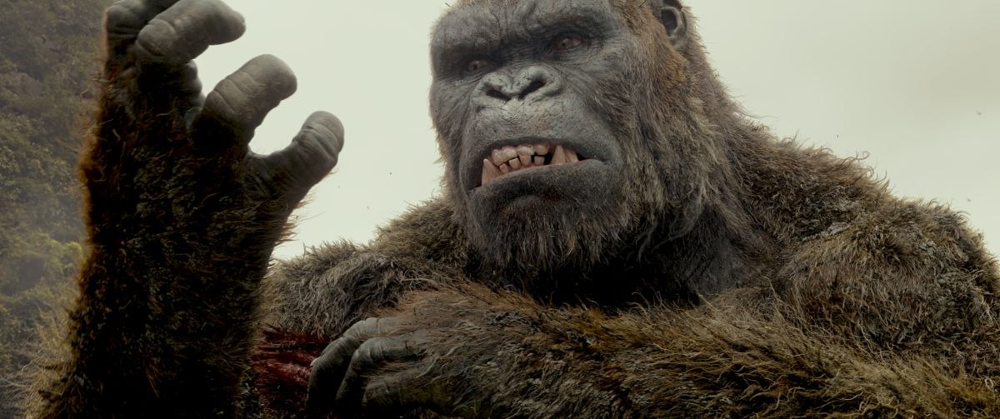

Fatos sobre o King Kong

King Kong é um personagem de cinema, um gorilla gigante, que teve origem no clássico filme King Kong (1933). O nome do primata é Kong, sendo o prenome King (Rei, em português), dado pelos promotores da desastrosa exibição pública em Nova York, contada no filme.
Sinopse
Um cinegrafista fracassado, em sua tentativa desesperada de fazer um best-seller, contrata uma atriz recém-desempregada chamada Ann Darrow e embarca em um navio fretado para a Ilha da Caveira. Lá, eles encontram uma tribo de nativos que veneram um gorilla gigante, de nome Kong. Ann Darrow é sequestrada e oferecida como sacrifício a Kong. Para recuperá-la, os tripulantes, o cinegrafista e o escritor do filme têm que enfrentar dinossauros, insetos gigantes e o próprio gorilla, que se apaixonou pela atriz. Depois de resgatada, Ann Darrow tenta libertar Kong do cinegrafista, que teve a ideia de exibi-lo na Broadway e lucrar com isso. Kong escapa e destrói quase toda a cidade em busca de sua amada. A cena final, no Empire State Building, é uma das cenas mais conhecidas e reproduzidas da história, aparecendo até em desenhos infantis e comédias.
Curiosidades sobre King Kong

King Kong is a film monster, resembling an enormous gorilla, that has appeared in various media since 1933. He has been dubbed The Eighth Wonder of the World, a phrase commonly used within the films. The character first appeared in the novelization of the 1933 film King Kong from RKO Pictures, with the film premiering a little over two months later. The film received universal acclaim upon its initial release and re-releases. A sequel quickly followed that same year with The Son of Kong, featuring Little Kong. In the 1960s, Toho produced King Kong vs. Godzilla (1962), pitting a larger Kong against Toho's own Godzilla, and King Kong Escapes (1967), based on The King Kong Show (1966–1969) from Rankin/Bass Productions. In 1976, Dino De Laurentiis produced a modern remake of the original film directed by John Guillermin. A sequel, King Kong Lives, followed a decade later featuring a Lady Kong. Another remake of the original, this time set in 1933, was released in 2005 from filmmaker Peter Jackson.
The most recent film, Kong: Skull Island (2017), set in 1973, is part of Legendary Entertainment's MonsterVerse, which began with Legendary's reboot of Godzilla in 2014. A sequel, Godzilla vs. Kong, once again pitting the characters against one another, is currently planned for 2021.
The character of King Kong has become one of the world's most famous movie icons, having inspired a number of sequels, remakes, spin-offs, imitators, parodies, cartoons, books, comics, video games, theme park rides, and a stage play.[5] His role in the different narratives varies, ranging from a rampaging monster to a tragic antihero.